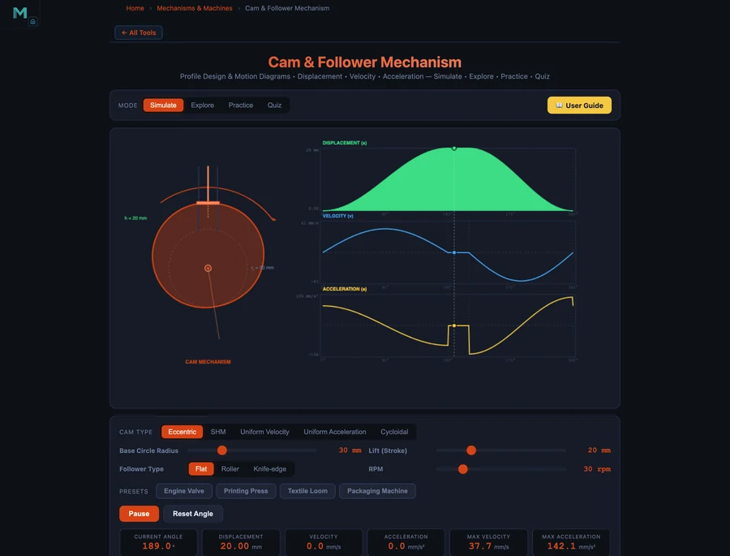

- A cam and follower converts rotary cam motion into a prescribed follower displacement; for SHM rise the displacement is s(θ) = (h/2)(1 − cos(πθ/β)) with peak velocity v_max = πhω/(2β).
- The four standard motion laws are SHM, cycloidal, uniform-acceleration (parabolic), and uniform-velocity; cycloidal gives the lowest peak acceleration (a_max = 2πhω²/β²) versus parabolic's 4hω²/β².
- Pressure angle tan α = (ds/dθ)/(r₀ + s) should be kept below 30° for a translating roller follower; increasing base circle radius r₀ reduces it.
Cam Mechanisms in Engineering
A cam and follower converts continuous rotary motion into a precisely controlled reciprocating or oscillating output. Unlike a crank-slider mechanism — which is constrained to sinusoidal motion — a cam can be shaped to produce almost any desired displacement programme: dwell periods, rapid rise, gentle return, or complex multi-step sequences. This flexibility makes cams the mechanism of choice wherever precise timing and motion control matter.
Engine valves in automotive engines, needle bars in sewing machines, pill-dispensing cams in pharmaceutical packaging lines, and gripper actuators in printing presses all rely on carefully designed cam profiles. The NHIT VisualLab Cam & Follower Calculator allows you to choose from four standard motion laws, set base circle radius, lift, speed, and dwell angles, and immediately see the resulting displacement, velocity, and acceleration diagrams — plus pressure angle analysis for the complete cam rotation.
The Four Standard Motion Laws
The motion law specifies how follower displacement s varies with cam rotation angle θ during the rise phase (from base circle to full lift h over rise angle β). The same law is typically applied in reverse for the return phase.
Simple Harmonic Motion (SHM)
The most widely used motion law, SHM produces a cosine displacement curve:
Peak velocity (at mid-rise, θ = β/2):
Peak acceleration (at start and end of rise):
Cycloidal Motion
The cycloidal law is derived from a point on a circle rolling along the rise angle. Its key advantage is that both displacement and its first two derivatives (velocity and acceleration) are continuous — there are no abrupt changes that generate shock loading:
Peak velocity and acceleration for cycloidal motion:
Although vmax is higher than SHM, amax is lower than parabolic motion, and the smooth acceleration profile makes cycloidal cams the preferred choice for high-speed automated machinery.
Uniform Acceleration (Parabolic)
The first half of the rise uses constant positive acceleration; the second half uses constant negative (deceleration) of equal magnitude. This produces the shortest rise time for a given maximum acceleration, but the abrupt change in acceleration at the midpoint generates a theoretical impulse that excites vibration:
Parabolic motion is used at low speeds or where compactness is critical, but is avoided in high-speed applications.
Uniform Velocity
Constant velocity during the rise — the displacement diagram is a straight line. Peak velocity is:
In theory, uniform velocity requires infinite acceleration at the start and end of the stroke (velocity discontinuity), making it unsuitable for any dynamic application. It is sometimes used as a conceptual baseline or for very slow feeds in machine tools.
Pressure Angle: The Critical Design Constraint
The pressure angle α is the angle between the follower's direction of motion and the normal to the cam profile at the contact point. It determines how much of the cam's contact force actually drives the follower (cosine component) versus pushes it sideways against its guide (sine component):
where r0 is the base circle radius and s is the current follower displacement. A high pressure angle means a large side force, which increases friction, wears the follower guide, and can cause jamming. The industry guideline (AGMA) is to keep αmax below 30° for a translating roller follower.
The most effective way to reduce pressure angle is to increase r0 — a larger base circle means the follower velocity (ds/dθ) is divided by a larger denominator. The trade-off is a larger, heavier cam. The simulator plots the pressure angle throughout the full cam rotation so you can identify the peak and adjust r0 accordingly.
Worked Example: Engine Valve Cam (SHM Preset)
Load the Engine Valve preset in the simulator: SHM motion law, base radius r0 = 25 mm, lift h = 10 mm, speed N = 60 rpm (ω = 2π rad/s), roller follower, rise angle β = 90° (π/2 rad).
Angular velocity: ω = 2π × 60/60 = 2π rad/s ≈ 6.28 rad/s. Rise angle in radians: β = π/2 ≈ 1.571 rad.
Peak follower velocity (at mid-rise):
Peak follower acceleration (at start/end of rise):
The simulator plots these peaks on the velocity and acceleration diagrams. Observe that the SHM curve is smooth everywhere — no abrupt acceleration changes — making it well suited for engine valvetrain applications operating up to several thousand rpm.

Printing Press Cam: Cycloidal Motion at Higher Lift
Switch to the Printing Press preset: Cycloidal motion law, r0 = 40 mm, h = 25 mm, N = 45 rpm (ω = 3π/2 rad/s), flat follower, rise angle β = 120° (2π/3 rad).
Peak velocity: vmax = 2 × 25 × (3π/2) / (2π/3) = 75π/(2π/3) = 75π × 3/(2π) = 112.5 mm/s ≈ 113 mm/s.
Peak acceleration: amax = 2π × 25 × (3π/2)² / (2π/3)² = 2π × 25 × 9π²/4 / (4π²/9) = 2π × 25 × (9π²/4) × (9/(4π²)) = 2π × 25 × 81/16 ≈ 796 mm/s².
Compared to a uniform-acceleration cam with the same parameters — which would give amax = 4 × 25 × (3π/2)² / (2π/3)² = 2 × 796 ≈ 1592 mm/s² — the cycloidal law halves the peak acceleration. This directly halves the inertia force on the follower and the contact stress on the cam surface, significantly extending cam life in a high-production printing environment.
Follower Types and Their Characteristics
The simulator supports the two most common follower types, each with distinct design trade-offs:
- Roller follower — A cylindrical roller rides against the cam surface, replacing sliding friction with rolling friction. Suitable for higher speeds and loads. The cam profile must have a radius of curvature everywhere greater than the roller radius to avoid undercutting (cusps in the profile that would cause the roller to dig in). The simulator warns if undercutting occurs.
- Flat-face follower — A flat plate slides on the cam surface. It inherently avoids undercutting regardless of cam geometry and is compact. The contact point translates across the flat face as the cam rotates, generating sliding velocity and higher friction than a roller. Common in automotive overhead-cam engines with desmodromic valvetrains.
Using the Cam & Follower Simulator
Open the simulator and work through these design exercises:
- Compare motion laws — Set r0 = 30 mm, h = 20 mm, N = 60 rpm, β = 180°. Switch between SHM, Cycloidal, and Uniform-acceleration. Compare vmax and amax values. Note that cycloidal produces the lowest amax.
- Pressure angle investigation — With SHM, r0 = 20 mm, h = 30 mm. Observe high pressure angle. Double r0 to 40 mm and watch pressure angle drop well below 30°. This illustrates the r0 / h trade-off.
- Speed sensitivity — Double the speed from 60 to 120 rpm. Velocity doubles (as expected since v ∝ ω) and acceleration quadruples (a ∝ ω²). This demonstrates why high-speed cams require particularly gentle motion laws.
- Engine valve preset — Load the Engine Valve preset. Verify the smooth SHM curve and note the low peak acceleration for engine speed. Switch to flat follower and compare the pressure angle diagram.
- Printing press vs textile loom — Compare the Printing Press (cycloidal, flat follower) and Textile Loom (uniform-acceleration, larger lift) presets. Note how the loom's higher lift and parabolic law produce much higher peak acceleration despite a lower speed.
Key Takeaways
- Motion law choice determines dynamic forces. Cycloidal minimises peak acceleration for a given lift and speed; uniform-acceleration maximises it. Choose the motion law based on operating speed and acceptable inertia loads.
- Acceleration scales with ω². Doubling camshaft speed quadruples inertia forces. High-speed design always demands the smoothest available motion law.
- Keep pressure angle below 30°. Large pressure angles cause side forces that jam followers. Increase base circle radius r0 to reduce pressure angle at the cost of a larger cam.
- Roller followers prevent undercutting but roller radius must be checked. The cam pitch curve radius of curvature must exceed the roller radius everywhere.
- Dwell periods are free. Unlike crank mechanisms, cam mechanisms can include arbitrary dwell intervals (zero follower velocity) between rise and return — essential for operations that require the follower to pause at a fixed position.
Frequently Asked Questions
What is a cam and follower mechanism?
A cam and follower is a mechanical linkage that converts continuous rotary motion (the cam) into a prescribed reciprocating or oscillating motion (the follower). The cam profile determines exactly how the follower moves — its displacement, velocity, and acceleration at every angle of rotation. Cam mechanisms are found in engine valves, printing presses, textile looms, and automated assembly machines.
What is the difference between SHM and cycloidal cam motion?
SHM (simple harmonic motion) produces a sinusoidal displacement curve and has finite velocity and acceleration everywhere. It is the smoothest common motion law. Cycloidal motion also has zero velocity at the start and end of the stroke but achieves lower peak acceleration than SHM for the same lift and speed. The cycloidal law is preferred for high-speed applications because its acceleration is continuous and it minimises impact loads.
What is pressure angle in cam design and why does it matter?
Pressure angle α is the angle between the direction of the follower's motion and the line of action of the contact force at the cam surface. A large pressure angle means a large side force on the follower guide, which increases friction and can cause binding or jamming. The maximum pressure angle should generally be kept below 30° for translating followers (AGMA guideline). Increasing the base circle radius r0 or reducing lift h reduces the pressure angle.
How does base circle radius affect the cam profile?
A larger base circle radius spreads the required lift over a larger cam circumference, which reduces the steepness of the cam profile and lowers the pressure angle. However, a larger base circle means a bigger, heavier cam. The designer must balance acceptable pressure angle against space and weight constraints. The simulator allows you to vary base circle radius and immediately see how pressure angle and cam geometry respond.
Which cam motion law produces the lowest peak acceleration?
For the same lift h, speed ω, and rise angle β, the cycloidal motion law minimises peak acceleration at amax = 2πhω²/β². Uniform-acceleration (parabolic) produces amax = 4hω²/β² — twice as high. Lower peak acceleration means lower dynamic forces and reduced wear, making cycloidal motion preferred for high-speed machinery.